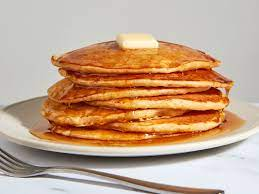

Pancakes

Description
A thin, flat cake of batter, usually fried
and turned in a pan. Pancakes are usually
eaten with syrup or rolled up with a filling.
Ingredients
- 1 ½ cups all-purpose flour
- 3 ½ teaspoons baking powder
- 1 tablespoon white sugar
- ¼ teaspoon salt, or more to taste
- 1 ¼ cups milk
- 3 tablespoons butter, melted
- 1 egg
Instructions
- Sift flour, baking powder, sugar, and salt
together in a large bowl. Make a well in
the center and add milk, melted butter,
and egg; mix until smooth.
- Heat a lightly oiled griddle or pan
over medium-high heat. Pour or scoop
the batter onto the griddle, using
approximately 1/4 cup for each pancake;
cook until bubbles form and the edges
are dry, about 2 to 3 minutes. Flip and
cook until browned on the other side.
Repeat with remaining batter.